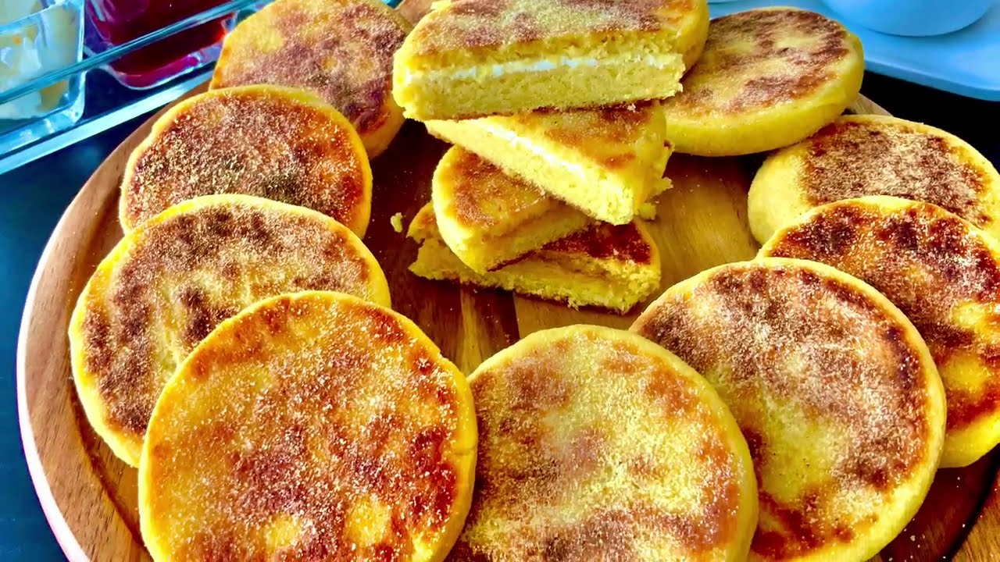

Harsha

Harcha (or harsha) is a Moroccan pan-fried bread made from semolina.
Although it looks a bit like an English muffin, it's more like cornbread in texture and taste. Recipes for harcha vary from family to family.
This one is quite rich in that it uses all butter and milk—it is delicious, especially when hot from the griddle!
Offer harcha for tea time or breakfast; they're best served warm with jam, cheese, or syrup made from melted butter and honey.
For a step-by-step tutorial, see how to make harcha.
Ingredients
-
2 cups (350 grams) fine semolina (not durum flour)
-
3 tablespoons sugar
-
2 teaspoons baking powder
-
1/4 teaspoon salt
-
1/2 cup (125 grams) soft or melted unsalted butter
-
1/2 to 3/4 cup (120 to 180 milliliters) milk
-
1/4 cup coarse semolina, optional
Steps
- In a large bowl, blend together the fine semolina, sugar, baking powder, and salt.
Add the butter, and blend with your hands or a wooden spoon just until the mixture is the consistency of sand and the semolina grains have all been moistened.
- Add 1/2 cup milk and mix until dough forms. It should be quite moist, wet almost, and easily packed into a large mound.
Add additional milk if necessary to achieve this consistency.
- Shape the dough into balls any size that you like and leave the dough to rest a few minutes.
- Preheat a griddle or large skillet over medium-low heat. While the griddle is heating, roll the balls in the coarse semolina,
if using, and flatten each ball into a disc about 1/4-inch thick, or a bit thicker if you like.
- Cook the harcha over fairly low heat, about 5 to 10 minutes on each side, until they turn a pale to medium golden color.
Flip only once, and check occasionally to be sure the harcha aren't coloring too quickly, as they need some time to cook all the way through.
- Serve immediately with jam, cheese, or butter.